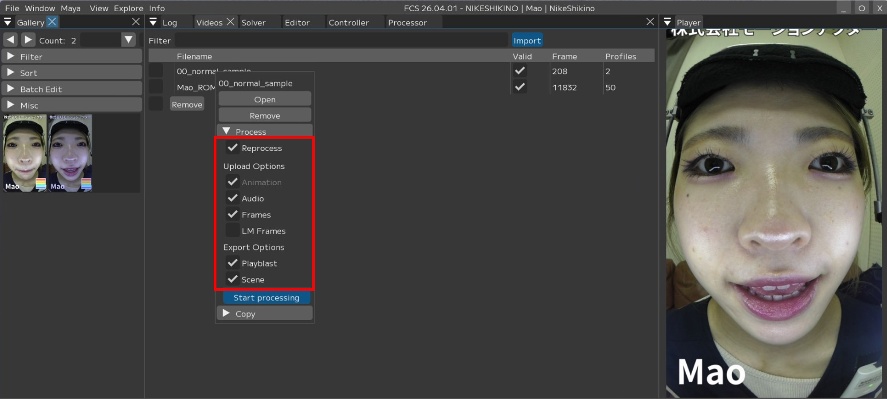
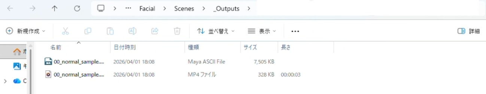
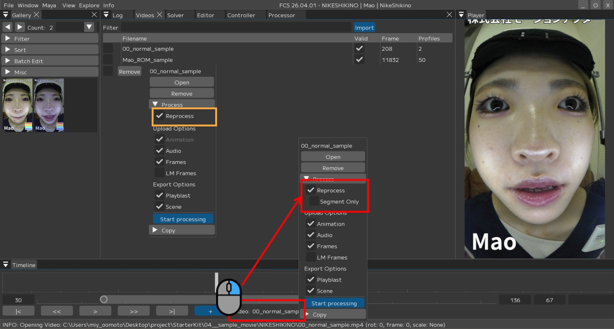
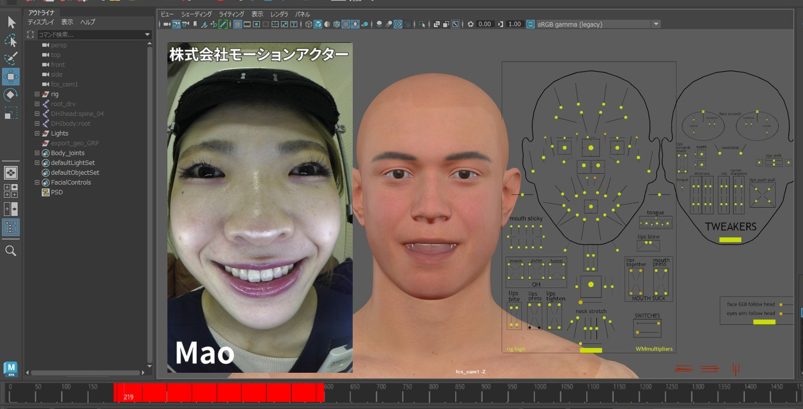
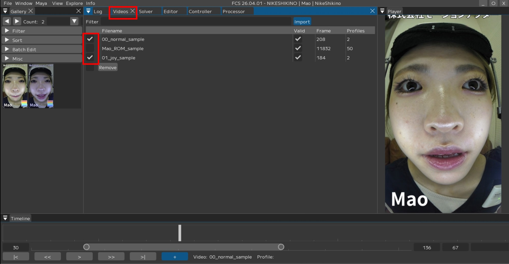
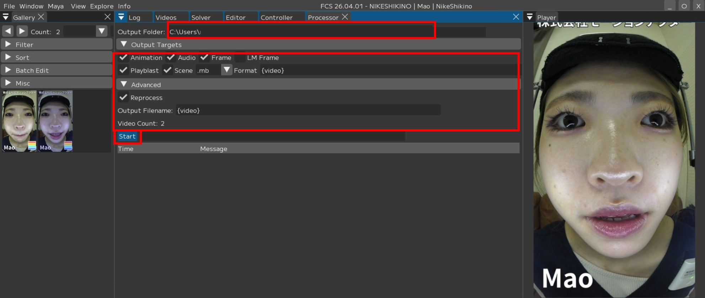

アニメーションの出力方法
Caution
解析する動画が広角レンズを使って撮影されている場合、Solverの設定変更が必要です。
詳しくはユーザーガイド/Menu/Window/Solverをご確認ください。
単体のアニメーション出力
Note
出力画面の項目についての説明は
ユーザーガイド/Menu/Window/Videosをご確認ください。
1.Videosウィンドウで解析/出力したい動画名の上で右クリックします。
画像のメニューが表示されるので、▼Process を選択・該当する項目に ☑ を入れ、

2.【Start process】を押します。

Note
解析結果を見てから再度調整を行いたい場合はPlayblastやSceneの ☑ を外しておくと時間短縮できます。

Note
初回出力時は時間がかかる場合があります。

3.出力中Mayaシーン上に ☑ を入れた項目が反映されていきます。
タイムスライダーに音声データ
イメージプレーンに連番画像
アニメーションデータ の順で反映される
アニメーションデータ反映時はスライダーが動く
4.出力完了
playblastやsceneに ☑ していた場合、
出力が完了したらエクスプローラーがポップアップします。

動画の一部範囲のみを再処理して出力
Timelineの一部表示機能を使用して、FCSのTimelineで表示している範囲のみのアニメーションを出力することができます。
※本機能は FCS 25.04.02 以降に搭載されています。
1.FCSのTimeline範囲をアニメーション出力したい部分に設定します。

2.Timelineの動画名を右クリックし、【Segment Only】にチェックを入れ、
【Start processing】を押します。

Maya Start の値について
FCSで指定した範囲のアニメーションをMayaの指定フレームに出力できます。
例：
・FCS Timeline上の指定範囲：100F～200F
・Maya Start：50
→この場合、アニメーションはMayaの『50F～150F』に出力されます。デフォルトでは『-1』になっています。
この場合FCSで指定した範囲と同じフレームに出力されます。
例：
・FCS Timeline上の指定範囲：100F～200F
→Mayaも『100F～200F』に出力されます。
Caution
Timelineの動画名を右クリックし表示されるメニューからのみ実行可能です。
（Videosウィンドウからは実行不可）
3.指定した範囲のみアニメーションが出力されます。

複数のアニメーション出力
Note
出力の項目についてはユーザーガイド/Menu/Window/Processerをご確認ください。
1.Videosウィンドウで解析・出力したい動画名に ☑ をつけます。

2.Processorウインドウを開き、出力したい項目に ☑ を入れます。
|
|


{kind=link}
{kind=link}
{kind=link}
{kind=link}
{kind=link}
Note
Output Filenameを変更することで出力ファイル名に任意の名前を設定できます。
{solver} ： solverの名前
{video} ： ビデオのファイル名
{user} ： windows ユーザ名
{project} ： 案件フォルダ名
{chara} ： キャラクター名
{actor} ： 役者名
{%Y%m%d}, {%H%M%S} ： 年月日、時間分秒
{video}のみにするとimportした動画名で出力されます。
3.設定できたら【Start】で処理を開始します。
{kind=link}

4.出力が完了したらエクスプローラーがポップアップします。
カメラ・イメージプレーンについて
Frames、またはLM Framesにチェックを入れた場合、Maya内のイメージプレーンに連番画像がセットされます。
連番画像をセットしたいカメラ・イメージプレーンの名前を
「Settings/Maya/Camera」「Settings/Maya/ImagePlane」から設定してください。
※Settingsについてはユーザーガイド/Menu/Settingsをご参照ください。
デフォルトの設定は以下の通りです。
イメージプレーン → imagePlane
カメラ → fcs_cam
指定した名前のカメラ・イメージプレーンがシーン内に無い場合は新しく作成されます。
パイプラインに合わせてカメラの名前を随時設定してください。